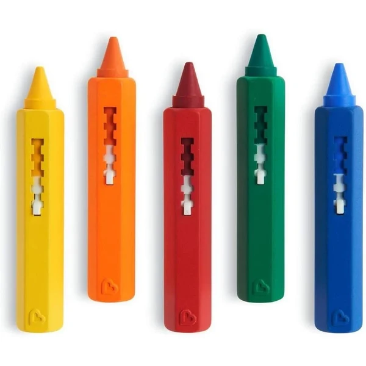
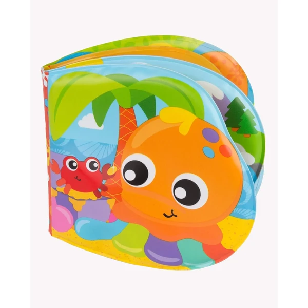
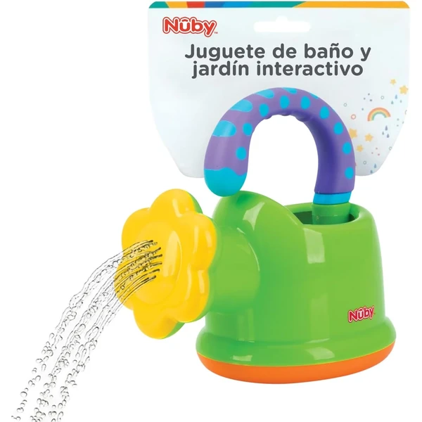
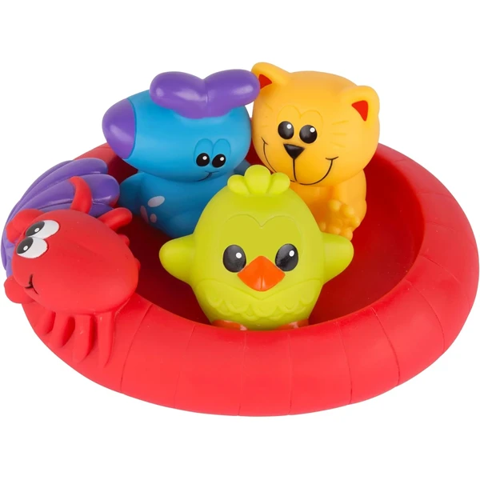
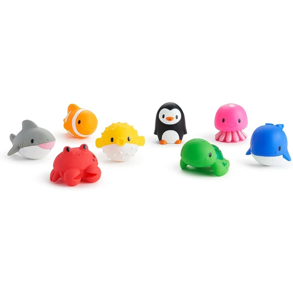
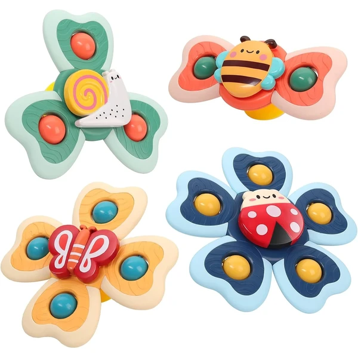
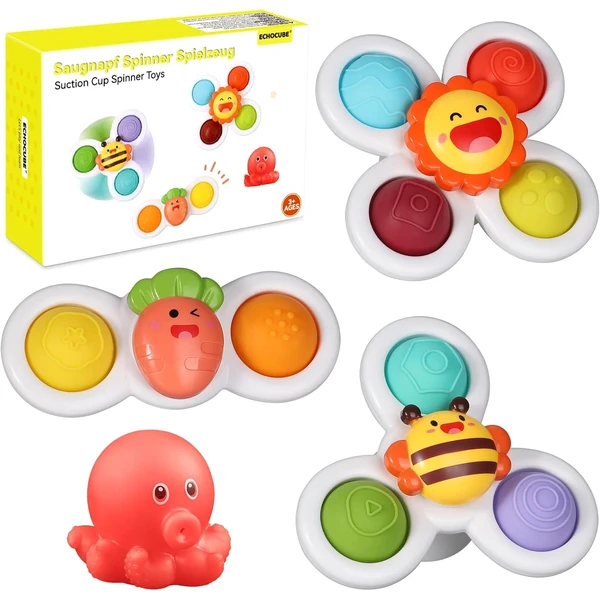
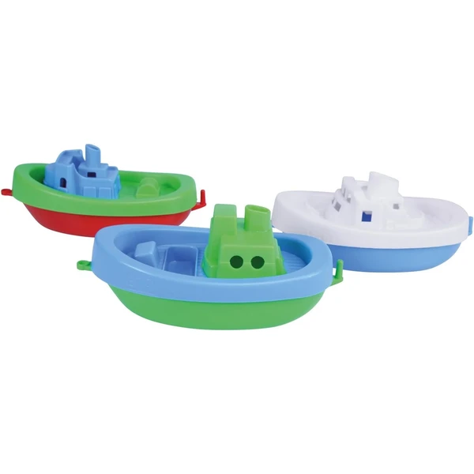

Munchkin Lápices de Baño
Un set de 5 lápices para dibujar directamente sobre las baldosas o la bañera mientras el peque se baña, pensados para estimular la creatividad. Los dibujos se borran fácilmente con una esponja húmeda.
⭐ ¿Por qué nos gusta?
- ✔ 5 lápices de colores para dibujar en la bañera.
- ✔ Se borran fácilmente con una esponja húmeda.
- ✔ Tamaño adaptado a manos pequeñas.
💬 Lo que más destacan las familias
Muchos padres destacan que convierte el momento del baño en un rato de dibujo, ideal para los peques que se resisten a bañarse. También se valora que los dibujos se limpian sin dejar rastro en los azulejos.
Ver en Amazon

Playgro Libro de Baño con Sonidos
Un libro de baño blando con páginas de animales acuáticos de colores y un sonido integrado que suena al apretarlo. Flota en el agua y también sirve como juguete fuera de la bañera.
⭐ ¿Por qué nos gusta?
- ✔ Sonido integrado al apretar las páginas.
- ✔ Flota en el agua, material blando y seguro.
- ✔ Estimula la vista, el oído y el tacto.
💬 Lo que más destacan las familias
Se repite bastante el comentario de que el sonido al apretarlo es lo que más engancha al bebé durante el baño. El material blando también se valora porque resulta fácil de sujetar con manos pequeñas.
Ver en Amazon

Nuby Regadera Interactiva
Una regadera de baño pensada para llenar y verter agua, ideal también para la playa o el jardín. Ayuda a trabajar la motricidad fina y la coordinación mientras el peque juega con el agua.
⭐ ¿Por qué nos gusta?
- ✔ Llenar y verter agua trabaja la motricidad fina.
- ✔ Versátil: baño, playa o jardín.
- ✔ Materiales duraderos y sin BPA.
💬 Lo que más destacan las familias
Lo que más suele gustar es lo versátil que resulta, ya que se usa tanto en la bañera como en la piscina o la playa. Los colores vivos también se valoran porque llaman mucho la atención del peque.
Ver en Amazon

Playgro Amigos Flotantes
Un set de tres juguetes flotantes de baño, fabricados en un material impermeable que no acumula suciedad ni moho por dentro. Pensados para el chapoteo y el juego libre en el agua.
⭐ ¿Por qué nos gusta?
- ✔ Tres figuras flotantes en un mismo set.
- ✔ Material impermeable, sin suciedad acumulada por dentro.
- ✔ Fácil de agarrar con manos pequeñas.
💬 Lo que más destacan las familias
Muchos padres destacan que, al no tener agujeros donde se acumule el agua, se mantienen limpios mucho más tiempo que otros juguetes de baño. El tamaño también se valora porque es cómodo para las manitas del peque.
Ver en Amazon

Munchkin Patos Exprimidores
Un set de 8 figuras marinas de goma que expulsan un chorro de agua al apretarlas, pensadas para el juego activo en la bañera. Colores vivos y tamaño fácil de agarrar para manos pequeñas.
⭐ ¿Por qué nos gusta?
- ✔ 8 figuras marinas que expulsan agua al apretarlas.
- ✔ Colores vivos e interactivos.
- ✔ Ayudan a desarrollar las habilidades motoras.
💬 Lo que más destacan las familias
Entre los comentarios más habituales aparece lo divertido que resulta el chorro de agua al apretarlos, alargando el rato de baño. La variedad de personajes también se valora porque no se cansan del mismo juguete.
Ver en Amazon

Vanmor Juguetes Giratorios con Ventosa
Un set de 4 juguetes giratorios con ventosa que se pegan a la pared de la bañera o cualquier superficie lisa, con forma de abeja, caracol, mariposa y mariquita. El giro trabaja la coordinación ojo-mano del peque.
⭐ ¿Por qué nos gusta?
- ✔ 4 figuras giratorias con ventosa incluidas.
- ✔ Se fijan a azulejos, cristal o mesas.
- ✔ Trabajan la coordinación ojo-mano al girar.
💬 Lo que más destacan las familias
Muchos padres valoran que la ventosa se agarre con firmeza a la bañera, así el juguete no se cae ni se pierde. El giro también se valora porque mantiene entretenido al peque durante el baño.
Ver en Amazon

ECHOCUBE Juguetes Giratorios con Ventosa
Un set de 3 juguetes giratorios con ventosa más un pulpo que cambia de color, pensados para pegarse a la bañera o cualquier superficie lisa. El sonido y el giro captan fácilmente la atención del peque.
⭐ ¿Por qué nos gusta?
- ✔ Incluye un pulpo que cambia de color.
- ✔ Ventosas fuertes, se fijan a la bañera.
- ✔ Sonido y giro que estimulan la atención.
💬 Lo que más destacan las familias
Lo que más suele gustar es el pulpo que cambia de color, una sorpresa que engancha mucho a los peques. Las ventosas también se valoran porque sujetan bien incluso con el agua corriendo.
Ver en Amazon

LENA Barcos Flotantes
Un set de tres barcos de plástico resistente que flotan en el agua, ideales para la bañera, la piscina o el arenero. Un clásico sencillo para el juego libre desde el primer año.
⭐ ¿Por qué nos gusta?
- ✔ 3 barcos que flotan en el agua.
- ✔ Válidos para bañera, piscina o arenero.
- ✔ Plástico resistente y duradero.
💬 Lo que más destacan las familias
Se repite bastante el comentario de que es un juguete sencillo pero que entretiene mucho tiempo, sin depender de sonidos ni luces. La resistencia del plástico también se valora porque aguanta bien el uso diario.
Ver en Amazon